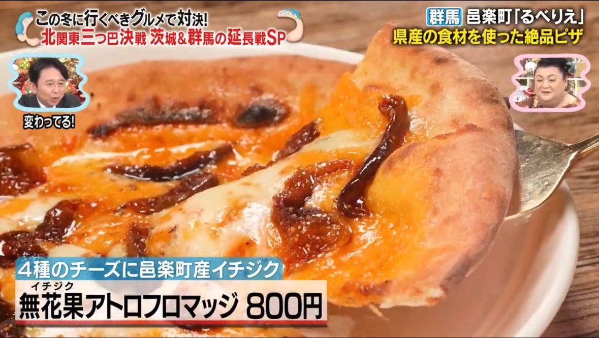
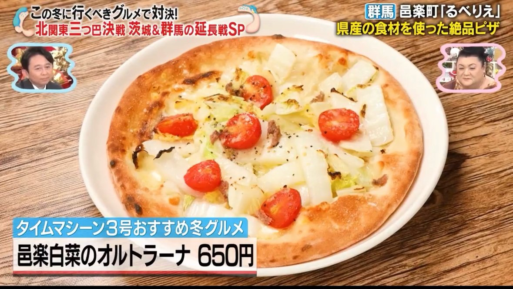
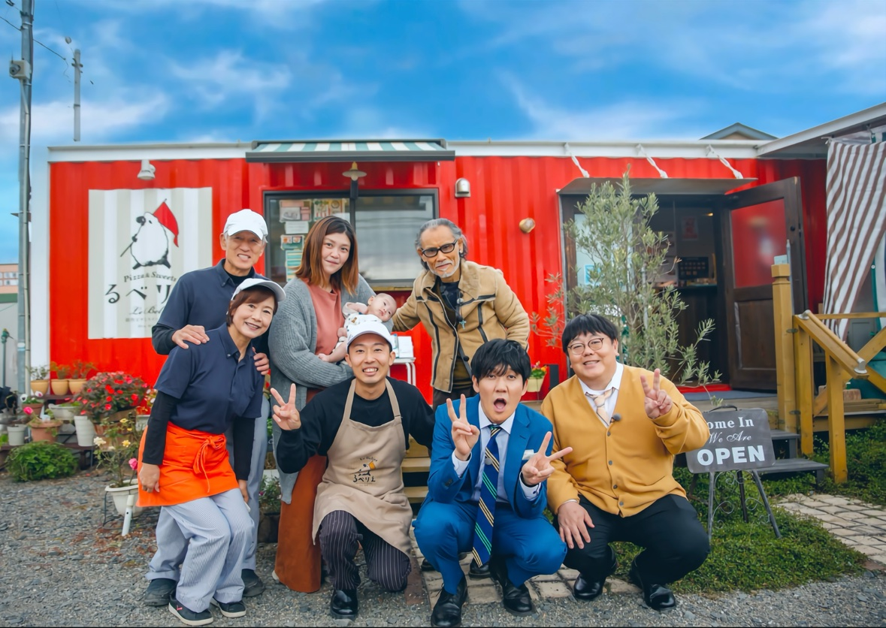
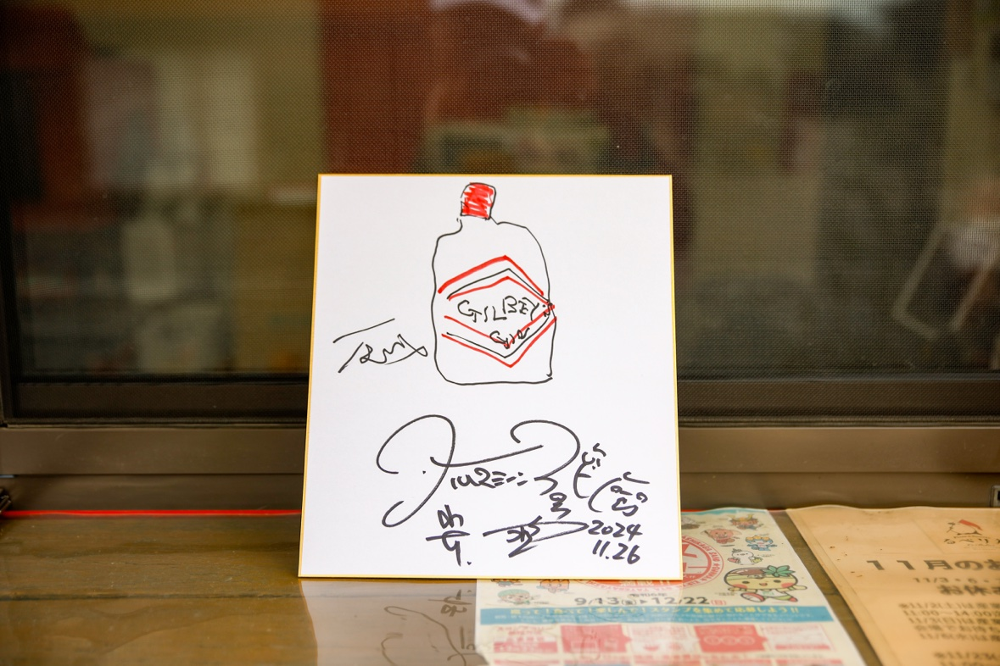
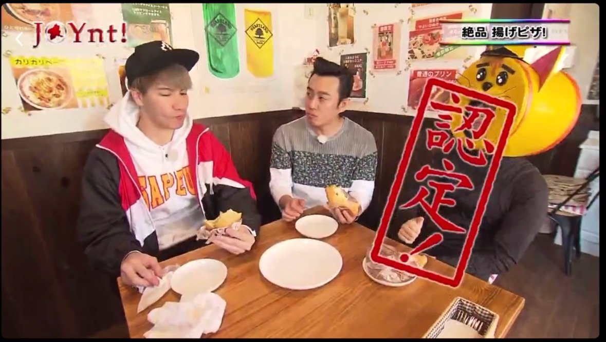
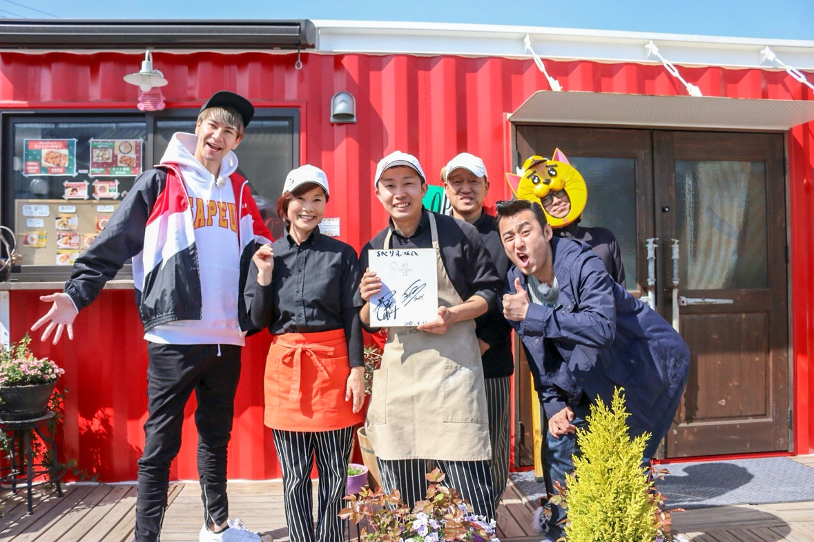
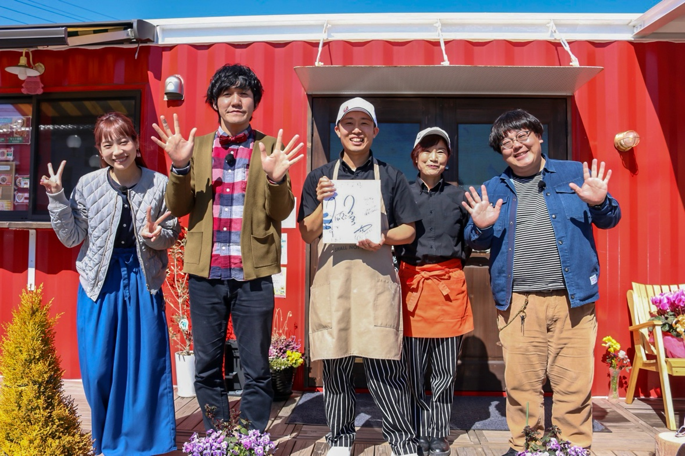
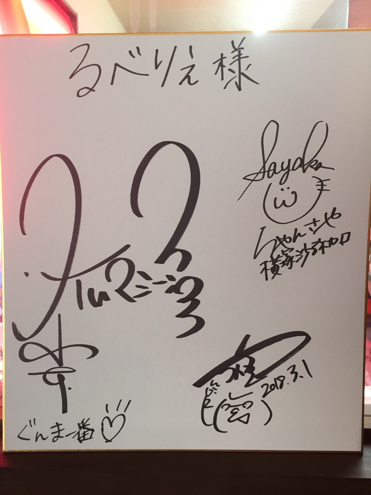

メディア実績
「るべりえ」が紹介された番組と、
認定の記録です。
テレビで紹介されました
📺 マツコ＆有吉 「かりそめ天国」 で紹介されました（テレビ朝日、2025年1月24日放送）
「かりそめ天国」で紹介されたのは、群馬ルゲリータ、無花果アトロフロマッジ、邑楽白菜のオルトラーナの3品です。ロケには片岡鶴太郎さんとタイムマシーン3号さんが来店しました。





関連記事：ABEMA TIMES／旅リスト
📺 JOYのASOBU-TV 「JOYnt!」 で紹介されました（群馬テレビ、2018年5月2日放送）
「ロバート山本と行くディープな邑楽町！」の回で紹介されました。揚げピザを食べたJOYさんから「これマジ美味い！」をいただき、群馬ジルチキンも絶賛いただきました。



📺 ケーブルテレビ 「う・ら・らTV」 で紹介されました（2016年6月27日号／2020年5月11日号／2024年8月26日号）
栃木・群馬・茨城の地域情報番組「う・ら・ら」で、これまでに3回紹介されました。
2016年6月27日号 →／2020年5月11日号 →／2024年8月26日号 →
📺 群馬テレビ 「ぐんま一番」 で紹介されました（2018年3月放送）
「早春の邑楽で探せ！むら美人」の回で、MCのタイムマシーン3号さんと横塚沙弥加さんに紹介されました。フランスでの修行やスイーツピザ作りの様子も取り上げられました。


※写真は放送当時のものです。現在の販売価格は各商品ページをご確認ください。
動画で紹介されました
🎬 【コラボ／公式公認】生成AIアイドル「WAGAHAI」（AiRT、2025年1月24日）
「かりそめ天国」出演を記念した公式公認の宣伝動画です。WAGAHAIのお店紹介レポートで、邑楽白菜のオルトラーナが紹介されました。
動画を見る →
「かりそめ天国」出演を記念した公式公認の宣伝動画です。WAGAHAIのお店紹介レポートで、邑楽白菜のオルトラーナが紹介されました。
動画を見る →
新聞・冊子・公式サイト
📰 上毛新聞「東毛シャトル」（2024年2月）
店頭の冷凍自動販売機「ど冷えもん」が紹介されました。
店頭の冷凍自動販売機「ど冷えもん」が紹介されました。
📰 上毛新聞電子版 JOMOtto（2025年8月1日）
「群馬のあんこスイーツ」特集で、マスカルあんバターが紹介されました。
記事を読む（マスカルあんバターのページ）→
紹介された商品「マスカルあんバター」はこちら →
「群馬のあんこスイーツ」特集で、マスカルあんバターが紹介されました。
記事を読む（マスカルあんバターのページ）→
紹介された商品「マスカルあんバター」はこちら →
ウェブ掲載
🔗 motto+（2022年7月27日／元記事 motto vol.27）
モデルの木村ミサさんの撮影ロケ地として紹介されました。赤いコンテナが目印の店として、揚げピザやホールピザ、店名の由来まで紹介されています。
記事を読む →
モデルの木村ミサさんの撮影ロケ地として紹介されました。赤いコンテナが目印の店として、揚げピザやホールピザ、店名の由来まで紹介されています。
記事を読む →
認定されました
🏅 群馬県産小麦100%使用の揚げピザが、邑楽町の新名物に認定されました